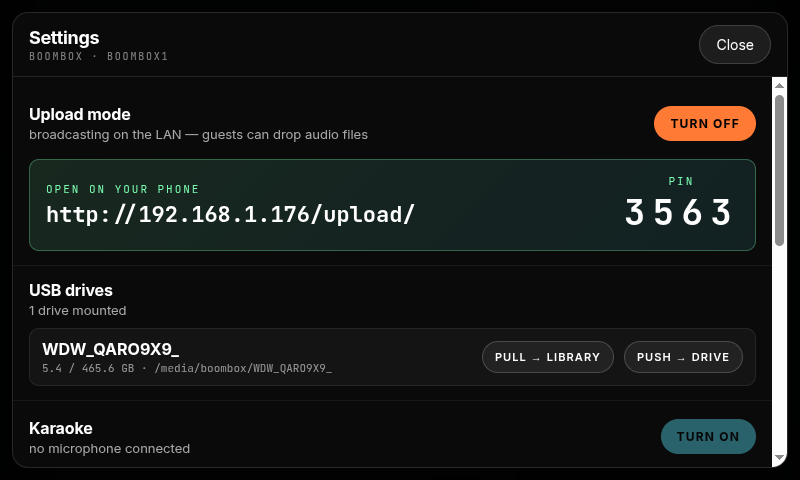

Music-first playback
Mopidy drives the local library and streaming sources, with transport controls exposed through the touchscreen and web UI.
Open-source Raspberry Pi stereo appliance
A touchscreen-driven retro boombox that turns a Raspberry Pi 5, a HiFiBerry-class I2S DAC, and a 5-inch display into a complete local music, streaming, remote-control, and video machine — with a full panel of physical buttons and a rotary encoder for the hardware-feel things a touchscreen cannot do.
What it is
Boombox boots into a Chromium kiosk UI, routes audio through PipeWire, exposes Mopidy and system state through small Python services, and keeps the physical screen focused on playback while the web UI handles richer tasks like playlist management and file transfer.
Machine capabilities
Mopidy drives the local library and streaming sources, with transport controls exposed through the touchscreen and web UI.
Bluetooth, AirPlay, Spotify Connect, and local playback are coordinated so the active source owns the speakers cleanly.
The 5-inch interface ships with retro-inspired skins and a documented path for designing new ones.
Playlist editing, uploads, deletes, SMB access, and machine controls live on the browser UI where a keyboard helps.
17 GPIO buttons and a rotary encoder cover transport, source switching, sleep timer, recording, and a soft-power shutdown. Pins are hot-reloadable and editable from the touchscreen Settings panel.
Full web UI
The local screen stays immediate: play, pause, seek, volume, queue, skin, and source switching. The authenticated LAN interface can go deeper: curate playlists, manage files, restart services, review library state, and use the same design language without crowding the kiosk.

How it fits together
HiFiBerry-class I2S DAC, PipeWire mixer, Mopidy, shairport-sync, raspotify, and BlueZ A2DP sink.
Touchscreen, 17 GPIO buttons with a rotary encoder, MPRIS, playerctl, AVRCP volume, and the boombox source orchestrator. The button pin map is hot-reloadable JSON.
Chromium kiosk on localhost, authenticated LAN web access, remote API, audio WebSocket, SMB, and Jellyfin video mode.
Run it from GitHub
The installer is idempotent. It configures packages, systemd units, nginx, the UI build, and service wiring so a Pi can stay current with the public repository.
sudo apt update && sudo apt install -y git
sudo git clone https://github.com/IntergalacticTech/Boombox.git /opt/boombox
sudo chown -R "$USER:$USER" /opt/boombox
/opt/boombox/install/install.sh
sudo rebootDocumentation